全文翻译
摘要
去噪扩散概率模型（DDPM）是一类生成模型，最近研究表明，这类模型能够生成高质量样本。研究发现，通过一些简单的修改，DDPM在保持高样本质量的同时，还能获得具有竞争力的对数似然值。此外，研究人员还发现，对反向扩散过程的方差进行学习，可以在样本质量差异可忽略不计的情况下，将前向传递次数减少一个数量级，这对这些模型的实际应用至关重要。此外，研究人员使用精度和召回率来比较DDPM和生成对抗网络（GAN）对目标分布的覆盖程度。最后，研究表明，这些模型的样本质量和对数似然值会随着模型容量和训练计算量的增加而平稳提升，这使得它们易于扩展。研究人员已将代码发布在https://github.com/openai/improved-diffusion 。
1. 引言
Sohl - Dickstein等人（2015年）提出了扩散概率模型，这是一类生成模型，通过学习逆转一个渐进的、多步的加噪过程来匹配数据分布。最近，Ho等人（2020年）揭示了去噪扩散概率模型（DDPM）和基于分数的生成模型（Song & Ermon，2019年；2020年）之间的等价性，后者使用去噪分数匹配（Hyvärinen，2005年）来学习数据分布的对数密度梯度。最近的研究表明，这类模型能够生成高质量的图像（Ho等人，2020年；Song & Ermon，2020年；Jolicoeur - Martineau等人，2020年）和音频（Chen等人，2020b；Kong等人，2020年），但DDPM能否在对数似然值上与其他基于似然的模型（如自回归模型（van den Oord等人，2016c）和变分自编码器（Kingma & Welling，2013年））相媲美，尚未得到验证。这就引发了诸多问题，比如DDPM是否能够捕捉到分布的所有模式。此外，尽管Ho等人（2020年）在CIFAR - 10（Krizhevsky，2009年）和LSUN（Yu等人，2015年）数据集上取得了极为出色的成果，但DDPM在像ImageNet这样多样性更高的数据集上的扩展性如何，仍不明确。最后，虽然Chen等人（2020b）发现DDPM可以通过少量采样步骤高效地生成音频，但在图像生成方面是否同样如此，还有待证明。
在本文中，研究人员证明了DDPM在对数似然值上能够与其他基于似然的模型竞争，即使在像ImageNet这样多样性高的数据集上也是如此。为了更严格地优化变分下界（VLB），研究人员使用了一种简单的重参数化方法和一个混合学习目标（将VLB与Ho等人（2020年）提出的简化目标相结合）来学习反向过程的方差。研究人员惊讶地发现，使用混合目标时，模型获得的对数似然值比直接优化对数似然得到的结果更好，并且发现直接优化对数似然的目标在训练过程中存在更多的梯度噪声。研究表明，一种简单的重要性采样技术可以减少这种噪声，使模型获得比使用混合目标时更好的对数似然值。
在将学习到的方差纳入模型后，研究人员意外地发现，可以用更少的步骤进行采样，且样本质量几乎没有变化。虽然Ho等人（2020年）的DDPM需要数百次前向传递才能生成高质量样本，但研究人员只需50次前向传递就能达到类似效果，从而加快了实际应用中的采样速度。在研究人员开展工作的同时，Song等人（2020a）开发了一种不同的快速采样方法，研究人员在实验中将其与该方法（DDIM）进行了比较。
虽然对数似然是与其他基于似然的模型进行比较的良好指标，但研究人员也希望将这些模型与GAN的分布覆盖范围进行对比。研究人员使用改进的精度和召回率指标（Kynkäänniemi等人，2019年），发现扩散模型在相似的FID下具有更高的召回率，这表明它们确实覆盖了目标分布的更大比例。最后，由于预计未来机器学习模型将消耗更多的计算资源，研究人员评估了随着模型规模和训练计算量增加，这些模型的性能变化。与（Henighan等人，2020年）类似，研究人员观察到，随着训练计算量的增加，模型性能呈现出可预测的提升趋势。
2. 去噪扩散概率模型
研究人员简要回顾Ho等人（2020）提出的去噪扩散概率模型（DDPM）的公式。该公式做了各种简化假设，例如固定的加噪过程 $q$，它在每个时间步添加对角高斯噪声。更一般的推导过程，可参见Sohl - Dickstein等人（2015）的研究。
2.1 定义
给定数据分布 $x_{0} \sim q(x_{0})$，研究人员定义前向加噪过程 $q$，该过程通过在时间 $t$ 添加方差为 $\beta_{t} \in(0,1)$ 的高斯噪声，生成潜在变量 $x_{1}$ 到 $x_{T}$，具体如下：
在 $T$ 足够大且 $\beta_{t}$ 满足特定条件的情况下，潜在变量 $x_{T}$ 近似为各向同性高斯分布。因此，如果知道精确的反向分布 $q(x_{t - 1} | x_{t})$，就可以从 $x_{T} \sim N(0, I)$ 中采样，并反向运行该过程，从而从 $q(x_{0})$ 中获得样本。然而，由于 $q(x_{t - 1} | x_{t})$ 依赖于整个数据分布，因此研究人员使用神经网络对其进行近似：
$q$ 和 $p$ 的组合是一个变分自编码器（Kingma & Welling，2013），变分下界（VLB）可以写为：
除了 $L_{0}$ 之外，公式（4）中的每一项都是两个高斯分布之间的KL散度，因此可以通过解析形式进行计算。在评估图像的 $L_{0}$ 时，研究人员假设每个颜色分量被划分为256个区间，并计算 $p_{\theta}(x_{0} | x_{1})$ 落在正确区间的概率（利用高斯分布的累积分布函数可以计算该概率）。还需注意的是，虽然 $L_{T}$ 不依赖于 $\theta$，但如果前向加噪过程充分破坏了数据分布，使得 $q(x_{T} | x_{0}) \approx N(0, I)$，那么 $L_{T}$ 将接近0。
正如Ho等人（2020）所指出的，公式（2）中定义的加噪过程使得研究人员可以直接在输入 $x_{0}$ 的条件下，对加噪后的潜在变量的任意步骤进行采样。令 $\alpha_{t}:=1 - \beta_{t}$ 且 $\bar{\alpha}_{t}:=\prod_{s = 0}^{t} \alpha_{s}$，可以写出边缘分布：
其中 $\epsilon \sim N(0, I)$。这里，$1 - \bar{\alpha}_{t}$ 表示任意时间步的噪声方差，也可以用它来定义噪声调度，而不使用 $\beta_{t}$。
利用贝叶斯定理，可以根据 $\tilde{\beta}_{t}$ 和 $\tilde{\mu}_{t}(x_{t}, x_{0})$ 计算后验概率 $q(x_{t - 1} | x_{t}, x_{0})$，其定义如下：
2.2 实际训练
公式（4）中的目标函数是独立项 $L_{t - 1}$ 的和，公式（9）提供了一种有效的方法，可从正向加噪过程的任意步骤进行采样，并利用后验概率（公式（12））和先验概率（公式（3））来估计 $L_{t - 1}$。因此，可以随机采样 $t$，并使用期望 $E_{t, x_{0}, \epsilon}[L_{t - 1}]$ 来估计 $L_{vlb}$。Ho等人（2020）在每个小批量中为每个图像均匀采样 $t$。
在定义先验概率时，有多种方法对 $\mu_{\theta}(x_{t}, t)$ 进行参数化。最直接的方法是用神经网络直接预测 $\mu_{\theta}(x_{t}, t)$ 。另外，网络也可以预测 $x_{0}$，并将该输出用于公式（11）以生成 $\mu_{\theta}(x_{t}, t)$ 。网络还可以预测噪声 $\epsilon$，并利用公式（9）和（11）推导出：
Ho等人（2020）发现，预测 $\epsilon$ 的效果最佳，特别是在与加权损失函数结合使用时：
这个目标函数可以看作是 $L_{vlb }$ 的加权形式（不包含影响 $\sum _{\theta}$ 的项）。作者发现，优化这个加权目标函数比直接优化 $L_{vlb}$ 能得到更好的样本质量，并通过与生成分数匹配（Song & Ermon，2019；2020）建立联系来解释这一现象。
需要注意的是，$L_{simple }$ 没有为 $\sum _{\theta}(x_{t}, t)$ 提供学习信号。不过，这并不重要，因为Ho等人（2020）通过将方差固定为 $\sigma_{t}^{2} I$ 而非学习它，取得了最佳效果。他们发现，使用 $\sigma_{t}^{2}=\beta_{t}$ 或 $\sigma_{t}^{2}=\tilde{\beta}_{t}$（分别是 $q(x_{0})$ 为各向同性高斯噪声或狄拉克函数时方差的上下界），都能获得相似的样本质量。
3. 提高对数似然
虽然Ho等人（2020年）发现，去噪扩散概率模型（DDPM）根据弗雷歇 inception 距离（FID, Frechet Inception Distance，Heusel等人，2017年）和inception分数（Salimans等人，2016年）能够生成高保真样本，但他们无法在这些模型上实现具有竞争力的对数似然。对数似然是生成式建模中广泛使用的指标，人们普遍认为，优化对数似然能促使生成式模型捕捉数据分布的所有模式（Razavi等人，2019年）。此外，最近的研究（Henighan等人，2020年）表明，对数似然的微小改进就能对样本质量和学习到的特征表示产生巨大影响。因此，探究为什么DDPM在这个指标上表现不佳很重要，因为这可能暗示了一个根本性的缺陷，比如模式覆盖不足。本节将探讨对第2节中描述的算法进行的几处修改，这些修改结合起来，能使DDPM在图像数据集上实现更好的对数似然，这表明这些模型与其他基于似然的生成式模型一样具有优势。
为了研究不同修改的效果，我们在ImageNet 64×64（van den Oord等人，2016b）和CIFAR-10（Krizhevsky，2009）数据集上，使用固定的超参数训练固定的模型架构。虽然CIFAR-10在这类模型中应用更为广泛，但我们也选择研究ImageNet 64×64，因为它在多样性和分辨率之间提供了良好的平衡，使我们能够快速训练模型而无需担心过拟合。此外，ImageNet 64×64在生成式建模领域已有广泛研究（van den Oord等人，2016c；Menick和Kalchbrenner，2018；Child等人，2019；Roy等人，2020），这使我们能够将DDPM直接与许多其他生成式模型进行比较。+
Ho等人（2020年）的设置（在将$\sigma_{t}^{2}=\beta_{t}$且$T = 1000$的情况下优化$L_{simple}$ ）在ImageNet 64×64上经过20万次训练迭代后，对数似然达到3.99（比特/维度）。我们在早期实验中发现，将$T$从1000增加到4000可以提高对数似然；经过这一调整，对数似然提高到3.77。在本节的其余部分，我们使用$T = 4000$，但我们将在第4节中探讨这一选择。
3.1 学习$\sum_{\theta}(x_{t}, t)$
在Ho等人（2020年）的研究中，作者将$\sum_{\theta}(x_{t}, t) = \sigma_{t}^{2}I$ ，其中$\sigma_{t}$ 是固定值而非学习得到的。奇怪的是，他们发现将$\sigma_{t}^{2}$固定为$\beta_{t}$与固定为时，得到的样本质量大致相同。考虑到和代表了两个极端情况，人们有理由质疑为什么这种选择不会影响样本。图1给出了线索，该图显示，除了在$t = 0$附近，和几乎相等，即在模型处理难以察觉的细节时二者存在差异。此外，随着扩散步骤的增加，和在更多的扩散过程中似乎保持接近。这表明，在扩散步骤无限多的极限情况下，的选择对样本质量可能根本没有影响。换句话说，随着扩散步骤的增加，模型均值$\mu_{\theta}(x_{t}, t)$对分布的影响比$\sum_{\theta}(x_{t}, t)$大得多。
虽然上述观点表明，为了保证样本质量，固定$\sigma_{t}$是一个合理的选择，但这与对数似然无关。事实上，图2显示，扩散过程的前几个步骤对变分下界的贡献最大。因此，通过更好地选择$\sum_{\theta}(x_{t}, t)$，似乎有可能提高对数似然。为了实现这一点，我们必须在学习$\sum_{\theta}(x_{t}, t)$的过程中避免出现Ho等人（2020年）遇到的不稳定性问题。
| 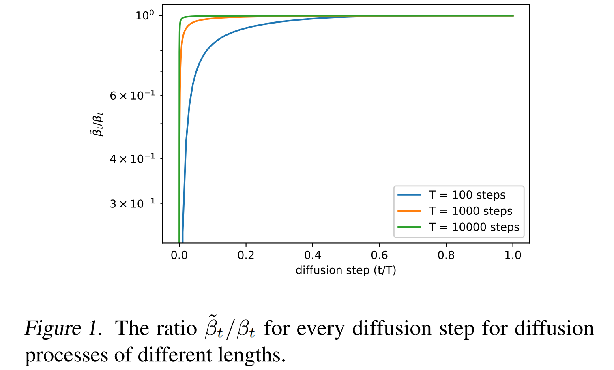 | 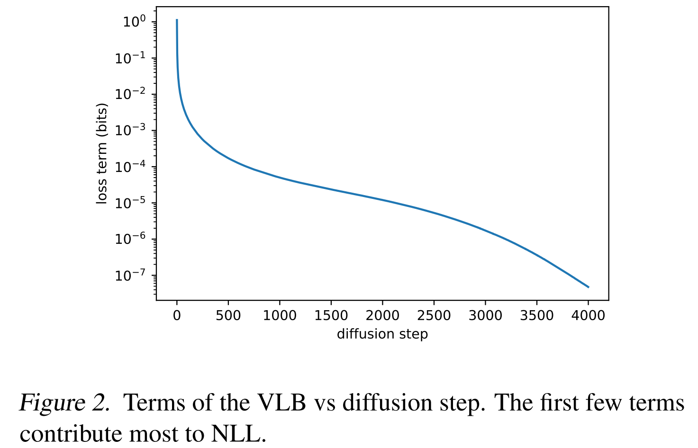 |
|---|---|
| 图1. 不同长度扩散过程中每个扩散步骤的$\tilde{\beta}_{t}/\beta_{t}$比值 | 图2. 变分下界（VLB）的各项与扩散步骤的关系。前几项对负对数似然（NLL）的贡献最大。 |
如图1所示，$\sum_{\theta}(x_{t}, t)$的合理取值范围非常小，正如Ho等人（2020年）所观察到的，即使在对数域中，神经网络也很难直接预测$\sum_{\theta}(x_{t}, t)$。相反，我们发现在对数域中将方差参数化为$\beta_{t}$和之间的插值会更好。具体来说，我们的模型输出一个向量$v$，每个维度都有一个分量，我们将这个输出转换为方差，如下所示：
我们没有对$v$施加任何约束，理论上允许模型预测超出插值范围的方差。然而，在实践中我们并未观察到网络这样做，这表明$\sum_{\theta}(x_{t}, t)$的取值范围确实具有足够的表达能力。
由于$L_{simple}$不依赖于$\sum_{\theta}(x_{t}, t)$，我们定义一个新的混合目标：
在我们的实验中，我们将$\lambda$设置为0.001，以防止$L_{vlb}$主导$L_{simple}$。基于同样的思路，我们还对$L_{vlb}$项中的$\mu_{\theta}(x_{t}, t)$输出应用了停止梯度操作。这样，$L_{vlb}$可以指导$\sum_{\theta}(x_{t}, t)$的学习，而$L_{simple}$仍然是影响$\mu_{\theta}(x_{t}, t)$的主要因素。
3.2 改进噪声调度
我们发现，虽然Ho等人（2020年）使用的线性噪声调度在高分辨率图像上效果良好，但对于分辨率为64×64和32×32的图像来说并非最优。特别是，前向加噪过程的后期噪声过多，对样本质量的提升贡献不大。从图3中可以直观地看出这一点。图4研究了这种影响的结果，我们可以看到，使用线性调度训练的模型在跳过高达20%的反向扩散过程时，（根据FID衡量）并没有变得更差。
| 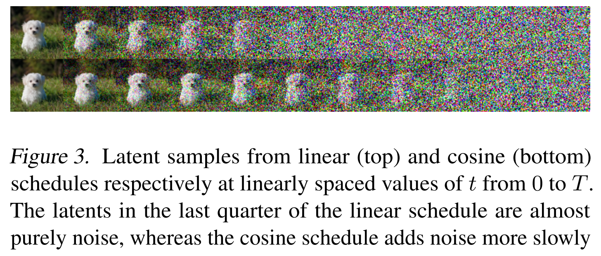 |
|---|
| 图3. 分别从线性（上）和余弦（下）调度在从0到T的线性间隔t值处的潜在样本。线性调度最后四分之一的潜在样本几乎全是噪声，而余弦调度添加噪声的速度更慢。 |
| 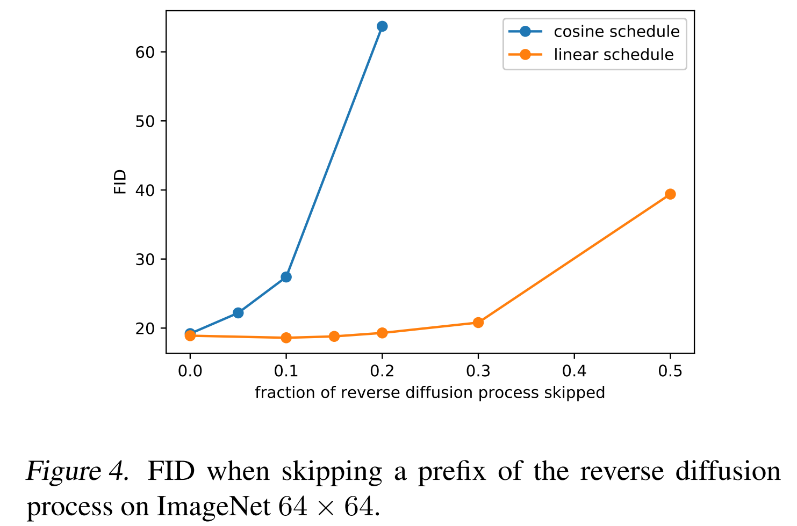 | 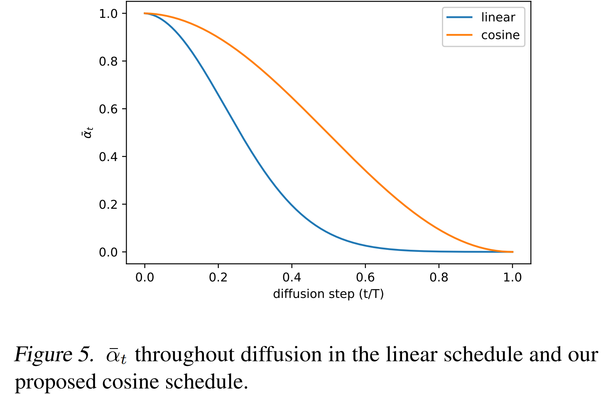 |
|---|---|
| 图4. 在ImageNet 64×64上跳过反向扩散过程的前缀时的FID。 | 图5. 线性调度和我们提出的余弦调度在整个扩散过程中的$\bar{\alpha}_{t}$ |
为了解决这个问题，我们根据$\bar{\alpha}_{t}$构建了一种不同的噪声调度：
为了从这个定义得到方差$\beta_{t}$，我们注意到$\beta_{t} = 1 - \frac{\bar{\alpha}_{t}}{\bar{\alpha}_{t - 1}}$。在实践中，我们将$\beta_{t}$裁剪为不大于0.999，以防止在扩散过程接近$t = T$时出现奇点。
我们的余弦调度旨在使$\bar{\alpha}_{t}$在过程中间呈线性下降，同时在$t = 0$和$t = T$的极端情况下变化很小，以防止噪声水平突然变化。图5展示了两种调度下$\bar{\alpha}_{t}$的变化情况。我们可以看到，Ho等人（2020年）的线性调度使$\bar{\alpha}_{t}$更快地趋近于零，比必要的情况更快地破坏了信息。
我们使用一个小的偏移量$s$来防止$\beta_{t}$在$t = 0$附近过小，因为我们发现，在过程开始时存在少量噪声会使网络难以准确预测$\epsilon$。具体来说，我们选择$s$使得$\sqrt{\beta_{0}}$略小于像素量化区间大小1/127.5，由此得到$s = 0.008$。我们特别选择使用$\cos^{2}$函数，是因为它是一种常见的数学函数，具有我们所需的形状。这个选择具有一定的任意性，我们预计许多其他形状相似的函数也会有类似的效果。
3.3 减少梯度噪声
我们原本期望通过直接优化$L_{vlb}$而不是$L_{hybrid}$来实现最佳的对数似然。然而，我们惊讶地发现，在实践中$L_{vlb}$实际上很难优化，至少在多样的ImageNet 64×64数据集上是如此。图6展示了$L_{vlb}$和$L_{hybrid}$的学习曲线。两条曲线都存在波动，但在相同的训练时间内，混合目标函数在训练集上显然实现了更好的对数似然。
| 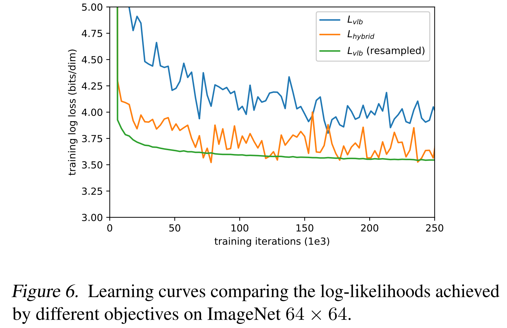 | 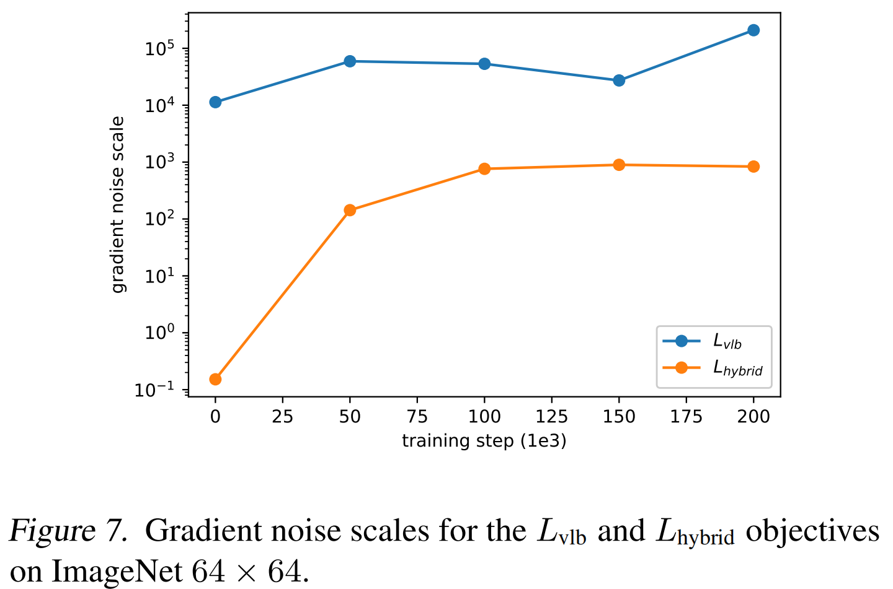 |
|---|---|
| 图6. 在ImageNet 64×64上比较不同目标函数实现的对数似然的学习曲线 | 图7. 在ImageNet 64×64上$L_{vlb}$和$L_{hybrid}$目标函数的梯度噪声尺度 |
我们假设$L_{vlb}$的梯度比$L_{hybrid}$的梯度噪声大得多。通过评估使用这两种目标函数训练的模型的梯度噪声尺度（McCandlish等人，2018年），我们证实了这一假设，如图7所示。因此，我们寻求一种减少$L_{vlb}$方差的方法，以便直接优化对数似然。
注意到$L_{vlb}$的不同项的量级差异很大（图2），我们假设均匀采样$t$会在$L_{vlb}$目标函数中引入不必要的噪声。为了解决这个问题，我们采用重要性采样：
由于$E[L_{t}^{2}]$在训练前是未知的，并且可能在训练过程中发生变化，我们为每个损失项保留之前10个值的历史记录，并在训练过程中动态更新。在训练开始时，我们均匀采样$t$，直到为每个$t \in [0, T - 1]$都抽取到10个样本。
通过这种重要性采样目标函数，我们能够通过优化$L_{vlb}$实现最佳的对数似然。在图6中，$L_{vlb}$（重采样）曲线展示了这一点。该图还显示，重要性采样目标函数的噪声明显低于原始的均匀采样目标函数。我们发现，在直接优化噪声较小的$L_{hybrid}$目标函数时，重要性采样技术并无帮助。
3.4 结果与消融实验
在本节中，我们对为提高对数似然而进行的更改进行消融实验。表1总结了我们在ImageNet 64×64上的消融实验结果，表2展示了在CIFAR-10上的结果。我们还对最佳的ImageNet 64×64模型进行了150万次迭代训练，并报告了这些结果。$L_{vlb}$和$L_{hybrid}$使用3.1节中的参数化方法学习$\sigma$进行训练。对于$L_{vlb}$，我们使用了3.3节中的重采样方案。
| 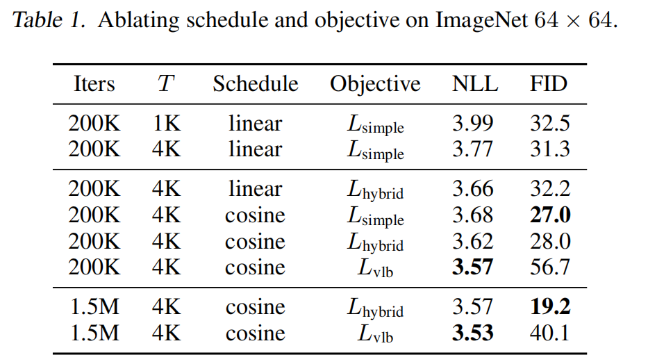 | 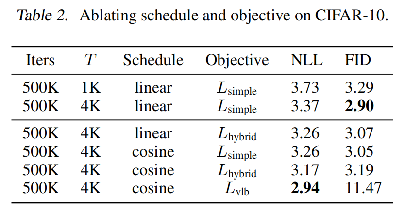 |
|---|---|
| 表1. 在ImageNet 64×64上对调度和目标函数的消融实验。 | 表2. 在CIFAR-10数据集上对噪声调度和目标函数的消融实验。 |
基于我们的消融实验，使用$L_{hybrid}$和我们的余弦调度在提高对数似然的同时，保持与Ho等人（2020年）的基线相似的FID。优化$L_{vlb}$进一步提高了对数似然，但代价是FID更高。我们通常更倾向于使用$L_{hybrid}$而不是$L_{vlb}$，因为它在不牺牲样本质量的情况下提高了似然。
在表3中，我们将表现最佳的似然模型与先前研究成果进行对比，结果显示，在对数似然方面，这些模型与传统的最优方法相比颇具竞争力。
| 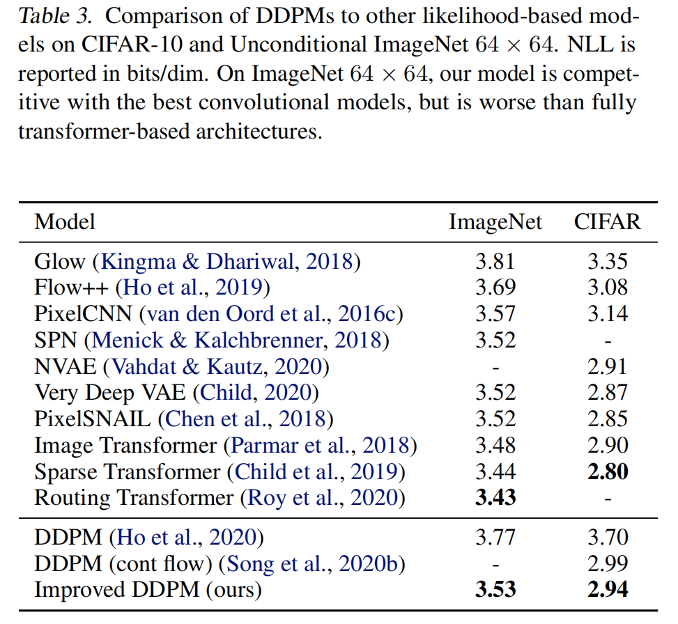 |
|---|
| 表3. 在CIFAR-10和无条件的ImageNet 64×64数据集上，去噪扩散概率模型（DDPMs）与其他基于似然的模型的比较。负对数似然（NLL）以比特/维度为单位报告。在ImageNet 64×64数据集上，我们的模型与最好的卷积模型相比具有竞争力，但比完全基于Transformer的架构要差。 |
4. 提高采样速度
我们所有的模型都经过4000步扩散训练，因此在现代GPU上生成单个样本需要花费几分钟时间。在本节中，我们探究如果减少采样时使用的步数，模型性能会如何变化，并且发现我们预训练的$L_{hybrid}$模型能够在比训练时少得多的扩散步数下生成高质量样本（无需任何微调）。以这种方式减少步数后，我们的模型能够在几秒内而非几分钟内完成采样，大大提高了图像DDPM在实际应用中的可行性。
对于一个经过$T$步扩散训练的模型，我们通常会使用与训练时相同的$t$值序列$(1, 2, \ldots, T)$进行采样。然而，也可以使用$t$值的任意子序列$S$进行采样。给定训练噪声调度$\bar{\alpha}_{t}$ ，对于给定的序列$S$，我们可以得到采样噪声调度$\bar{\alpha}_{S_{t}}$ ，进而得到相应的采样方差：
由于$\sum_{\theta}(x_{S_{t}}, S_{t})$被参数化为$\beta_{S_{t}}$和$\tilde{\beta}_{S_{t}}$之间的一个范围，它会自动针对更短的扩散过程进行重新缩放。因此，我们可以将$p(x_{S_{t - 1}} | x_{S_{t}})$计算为$\mathcal{N}(\mu_{\theta}(x_{S_{t}}, S_{t}), \sum_{\theta}(x_{S_{t}}, S_{t}))$ 。
为了将采样步数从$T$减少到$K$，我们在$1$到$T$（包含两端）之间取$K$个均匀分布的实数，然后将每个结果四舍五入到最接近的整数。在图8中，我们评估了一个$L_{hybrid}$模型和一个$L_{simple}$模型的FID，这两个模型都经过4000步扩散训练，使用25、50、100、200、400、1000和4000步采样。我们对完全训练好的模型和训练过程中的中间模型进行了这样的评估。对于CIFAR-10，我们使用20万次和50万次训练迭代，对于ImageNet 64，我们使用50万次和150万次训练迭代。我们发现，固定标准差的$L_{simple}$模型（无论是较大的$\sigma_{t}^{2} = \beta_{t}$还是较小的$\sigma_{t}^{2} = \tilde{\beta}_{t}$ ）在减少采样步数时，样本质量下降得更明显，而我们学习标准差的$L_{hybrid}$模型则能保持较高的样本质量。对于这个模型，100步采样就足以使完全训练好的模型达到接近最优的FID。
| 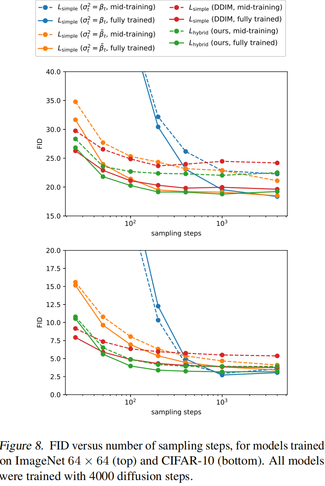 |
|---|
| 图8. 在ImageNet 64×64（上）和CIFAR-10（下）上训练的模型的FID与采样步数的关系。所有模型都经过4000步扩散训练。 |
在我们进行研究的同时，Song等人（2020a）提出了一种用于DDPM的快速采样算法，通过生成一个新的隐式模型，该模型具有与原模型相同的边际噪声分布，但能将噪声确定性地映射为图像。我们将他们的算法DDIM也纳入图8中进行比较，发现DDIM在采样步数少于50步时能生成更好的样本，但在使用50步或更多步数时样本质量较差。有趣的是，DDIM在训练开始时表现较差，但随着训练的进行，它与其他采样器的差距逐渐缩小。我们发现，我们的跨步技术会显著降低DDIM的性能，因此我们的DDIM结果使用了Song等人（2020a）提出的常数跨步，即最后一步是$T - T/K + 1$而不是$T$ 。其他采样器在使用我们的跨步技术时表现略有提升。
5. 与生成对抗网络（GANs）的比较
虽然对数似然是衡量模式覆盖程度的一个良好指标，但用这个指标来与GANs进行比较却很困难。因此，我们转而使用精度和召回率（Kynkänniemi等人，2019）进行对比。由于在GAN的研究文献中，训练类条件模型是很常见的做法，所以在本次实验中我们也采用了同样的方式。为了使我们的模型成为类条件模型，我们通过与时间步t相同的路径注入类别信息。具体来说，我们将类别嵌入向量$v_{i}$添加到时间步嵌入向量$e_{t}$中，并将这个嵌入向量传递给模型中的各个残差块。我们使用$L_{hybrid}$目标函数进行训练，并采用250步采样。我们训练了两个模型：一个是参数为1亿的“小”模型，训练了170万步；另一个是参数为2.7亿的较大模型，训练了25万步。我们还训练了一个BigGAN-deep模型，其生成器和判别器的参数总量为1亿。
在计算这个任务的指标时，我们生成了50,000个样本（而不是通常的10,000个），以便能直接与其他研究成果进行比较。这是我们在报告ImageNet 64×64的FID时，唯一一次使用50,000个样本进行计算的情况。对于FID，参考分布的特征是在整个训练集上计算得到的，这遵循了（Brock等人，2018）的方法。
图9展示了我们较大模型生成的样本，表4总结了实验结果。我们发现，BigGAN-deep在FID方面优于我们的小模型，但在召回率方面表现不佳。这表明，扩散模型在覆盖分布模式方面比类似的GANs表现更优。
| 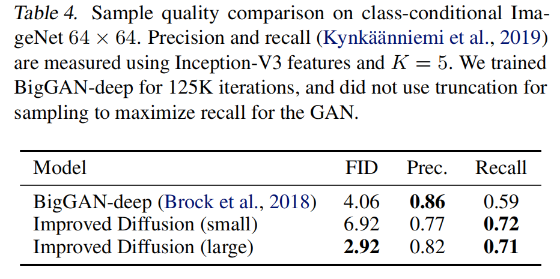 | 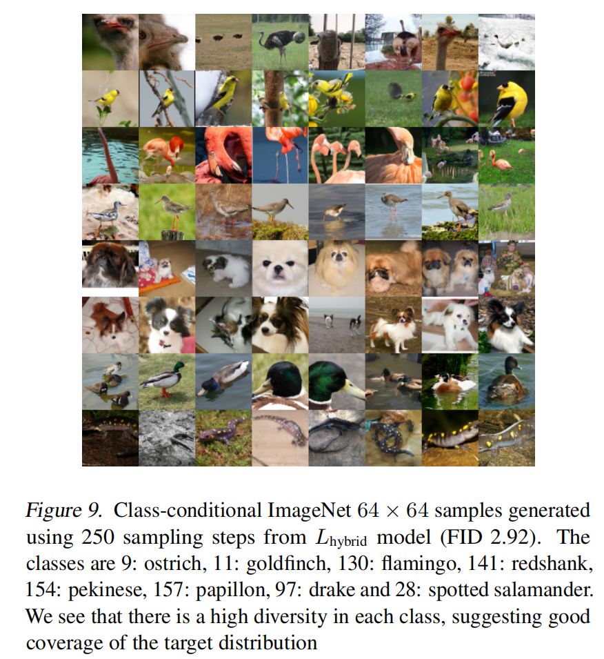 |
|---|---|
| 表4. 在类条件ImageNet 64×64上的样本质量比较。精度和召回率（Kynkänniemi等人，2019年）使用Inception-V3特征和$K = 5$进行测量。我们对BigGAN-deep模型进行了12.5万次迭代训练，并且在采样时不使用截断以最大化GAN的召回率。 | 图9. 使用$L_{hybrid}$模型（FID为2.92）经过250步采样生成的类条件ImageNet 64×64样本。这些类分别是9：鸵鸟、11：金翅雀、130：火烈鸟、141：红脚鹬、154：哈巴狗、157：蝴蝶犬、97：公鸭和28：斑点蝾螈。我们可以看到每个类别的样本都具有很高的多样性，这表明模型对目标分布有很好的覆盖。 |
6. 扩展模型规模
在前面的章节中，我们展示了在不改变训练计算量的情况下，通过算法改进提升对数似然和FID的方法。然而，现代机器学习的一个趋势是，更大的模型和更长的训练时间往往能提升模型性能（Kaplan等人，2020；Chen等人，2020a；Brown等人，2020）。基于这一观察，我们研究FID和负对数似然（NLL）如何随着训练计算量的变化而变化。我们的结果虽然是初步的，但表明随着训练计算量的增加，DDPMs的性能有可预测的提升。
为了衡量性能如何随训练计算量变化，我们使用第3.1节中描述的$L_{hybrid}$目标函数，在ImageNet 64×64上训练了四个不同的模型。为了改变模型容量，我们在所有层应用深度乘数，使得第一层分别有64、96、128或192个通道。注意，我们之前的实验中第一层使用128个通道。由于每层的深度会影响初始权重的尺度，我们针对每个模型将Adam（Kingma和Ba，2014）学习率除以通道乘数的平方根进行调整，使得128通道的模型学习率为0.0001（与我们其他实验一致）。
图10展示了FID和NLL相对于理论训练计算量的提升情况。FID曲线在对数坐标图上大致呈线性，这表明FID遵循幂律变化（用黑色虚线表示）。NLL曲线与幂律的拟合度没有那么高，这表明验证集上的NLL变化方式不如FID理想。这可能是由多种因素导致的，比如1）这类扩散模型存在出乎意料的高不可约损失（Henighan等人，2020）；2）模型对训练分布过拟合。我们还注意到，这些模型一般无法达到最优的对数似然，因为它们是使用$L_{hybrid}$目标函数训练的，而不是直接使用$L_{vlb}$，目的是同时兼顾良好的对数似然和样本质量。
| 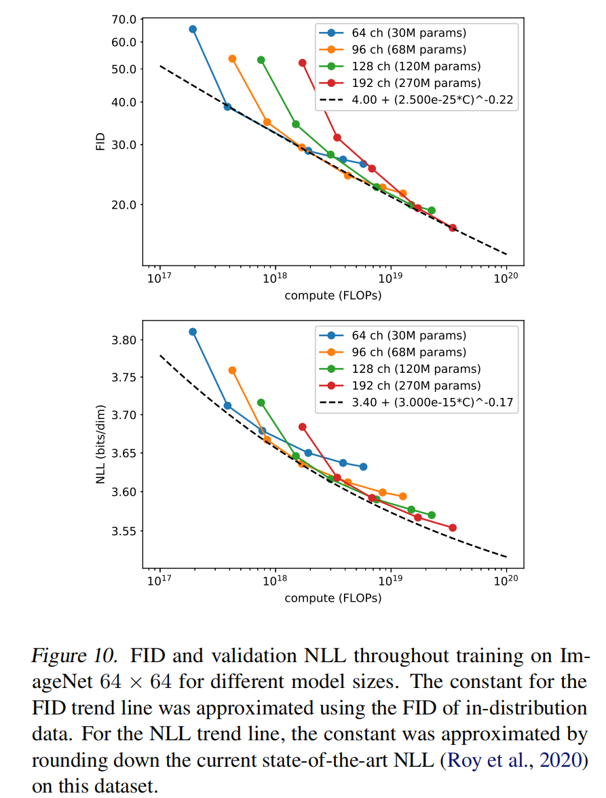 |
|---|
| 图10. 在ImageNet 64×64上不同模型规模在训练过程中的FID和验证集NLL。FID趋势线的常数是通过分布内数据的FID近似得到的。对于NLL趋势线，常数是通过向下取整该数据集当前最先进的NLL（Roy等人，2020）近似得到的。 |
7. 相关工作
Chen等人（2020b）和Kong等人（2020）是近期两项利用去噪扩散概率模型（DDPMs）在基于梅尔频谱图的条件下生成高保真音频的研究。与我们的工作同期，Chen等人（2020b）结合改进的调度和$L_{1}$损失，使得在采样步数减少的情况下，样本质量仅有轻微下降。然而，与我们的无条件图像生成任务相比，他们的生成任务有梅尔频谱图提供的强输入条件信号，我们推测这使得在较少的扩散步数下进行采样变得更容易。
Jolicoeur-Martineau等人（2020）探索了图像领域的分数匹配，并构建了一个对抗训练目标，以产生更好的$x_{0}$预测。然而，他们发现选择更好的网络架构消除了对这种对抗目标的需求，这表明对抗目标对于强大的生成式建模并非必要。
与我们的工作并行，Song等人（2020a）和Song等人（2020b）通过利用不同的采样过程，为使用DDPM目标训练的模型提出了快速采样算法。Song等人（2020a）通过推导一个隐式生成模型来实现这一点，该模型与DDPMs具有相同的边际噪声分布，同时能将噪声确定性地映射到图像。Song等人（2020b）将扩散过程建模为连续随机微分方程（SDE）的离散化，并观察到存在一个与反向SDE采样相对应的常微分方程（ODE）。通过改变ODE求解器的数值精度，他们可以在较少的函数评估次数下进行采样。然而，他们指出，这种技术在直接使用时，生成的样本比祖传采样更差，只有在结合朗之万校正步骤时才能实现更好的FID。这反过来又需要手动调整朗之万步骤的信噪比。我们的方法允许直接从祖传过程中快速采样，从而无需额外的超参数。
同样与我们的工作同期，Gao等人（2020）开发了一种扩散模型，其中反向扩散步骤由基于能量的模型建模。这种方法的一个潜在意义是，可能需要更少的扩散步骤就能获得高质量的样本。
8. 结论
我们已经证明，通过一些修改，去噪扩散概率模型（DDPMs）可以在对样本质量影响极小的情况下，实现更快的采样速度和更高的对数似然。通过我们的参数化方法和$L_{hybrid}$目标函数来学习$\sum_{\theta}$，提高了模型的对数似然，使得这些模型的对数似然更接近其他基于似然的模型。我们还意外地发现，这一改变还使得从这些模型采样所需的步数大幅减少。
我们还发现，DDPMs在样本质量上可以与生成对抗网络（GANs）相媲美，同时在通过召回率衡量的模式覆盖方面表现更优。此外，我们研究了DDPMs的性能如何随着可用训练计算量的变化而变化，发现更多的训练计算量能显著提升样本质量和对数似然。
这些结果综合起来，使得DDPMs成为生成式建模中一个极具吸引力的选择。因为它们结合了良好的对数似然、高质量的样本、相当快的采样速度，以及一个坚实可靠、稳定的训练目标，并且该目标能随着训练计算量的增加而轻松扩展。这些结果表明，DDPMs是未来研究的一个很有前景的方向。
A. 超参数
在我们所有的实验中，我们使用了与Ho等人（2020）类似的UNet模型架构 。我们将注意力层改为使用多头注意力机制（Vaswani等人，2017），并且选择使用四个注意力头而非一个（同时保持总通道数不变）。我们不仅在16×16分辨率下使用注意力机制，在8×8分辨率下也会使用。此外，我们改变了模型基于t进行条件设定的方式。具体来说，我们不再计算一个条件向量并将其以GroupNorm(h+v)的形式注入隐藏状态h，而是计算条件向量w和b，并以GroupNorm(h)(w + 1)+b的形式将它们注入隐藏状态。我们在ImageNet 64×64数据集上进行的初步实验发现，这些修改略微提高了FID（Frechet Inception Distance，弗雷歇 inception 距离，用于衡量生成图像与真实图像之间的相似性）。
对于ImageNet 64×64数据集，我们使用的架构描述如下。下采样堆栈执行四个下采样步骤，每个步骤都包含三个残差块（He等人，2015）。上采样堆栈的设置与下采样堆栈镜像对称。从最高分辨率到最低分辨率，UNet的各个阶段分别使用[C, 2C, 3C, 4C]个通道。在我们对ImageNet 64×64的消融实验中，我们将C设置为128，但在后面的部分我们也对C进行了缩放实验。我们估计，当C = 128时，我们的模型包含1.2亿个参数，前向传播大约需要390亿次浮点运算。
对于我们在CIFAR - 10数据集上的实验，我们使用了一个较小的模型，每个下采样阶段有三个残差块，层宽度为[C, 2C, 2C, 2C]，其中C = 128。我们对 dropout 值{0.1, 0.2, 0.3}进行了扫描，发现对于线性噪声调度，0.1效果最佳，而对于我们的余弦噪声调度，0.3效果最佳。我们将在F节中进一步展开讨论。
在所有实验中，我们都使用Adam优化器（Kingma和Ba，2014）。在大多数实验中，我们使用的批量大小为128，学习率为$10^{-4}$，并对模型参数采用指数移动平均（EMA），移动平均率为0.9999。在我们的缩放实验中，我们会根据不同的模型大小调整学习率。在我们对更大的类条件ImageNet 64×64模型的实验中，为了在更多的GPU上更快地进行训练，我们将批量大小扩大到了2048。
当使用Ho等人（2020）的线性噪声调度时，我们从$\beta_{1}=0.0001 / 4$到$\beta_{4000}=0.02 / 4$进行线性插值，以保持$T = 4000$调度下$\bar{\alpha}_{t}$的形状。
在计算FID时，我们从模型中生成50000个样本，但对于无条件的ImageNet 64×64数据集，我们生成10000个样本。仅使用10000个样本会使FID偏高，但采样所需的计算量要少得多，有助于进行大规模的消融实验。由于我们主要在无条件的ImageNet 64×64数据集上使用FID进行相对比较，这种偏差是可以接受的。在计算参考分布统计量时，我们遵循先前的工作（Ho等人，2020；Brock等人，2018），对于CIFAR - 10和ImageNet数据集，我们使用完整的训练集，对于LSUN数据集，我们使用50000个训练样本。需要注意的是，无条件的ImageNet 64×64模型是使用官方的ImageNet - 64数据集（van den Oord等人，2016a）进行训练和评估的，而对于类条件的ImageNet 64×64和256×256数据集，我们对图像进行中心裁剪和区域下采样（Brock等人，2018）。
B. 在LSUN 256×256数据集上的快速采样
为了测试我们的$L_{hybrid}$模型在高分辨率领域的有效性，我们在LSUN卧室（Yu等人，2015）数据集上训练了$L_{hybrid}$和$L_{simple}$模型。我们训练了两个模型：一个模型的批量大小为64，学习率为$2×10^{-5}$，这与Ho等人（2020）的设置相同；另一个模型的批量大小为128，学习率为$10^{-4}$。所有模型都使用1.536亿个样本进行训练，对于批量大小为64的模型来说，这相当于240万次训练迭代。
我们的结果如图11所示。我们发现，当扩散步骤少于50步时，DDIM（Denoising Diffusion Implicit Models，去噪扩散隐式模型）的表现优于我们的$L_{hybrid}$模型；而当扩散步骤超过50步时，$L_{hybrid}$模型的表现则优于DDIM。有趣的是，我们注意到DDIM在较小的学习率和批量大小下更有优势，而我们的方法则能够利用较大的学习率和批量大小。
| 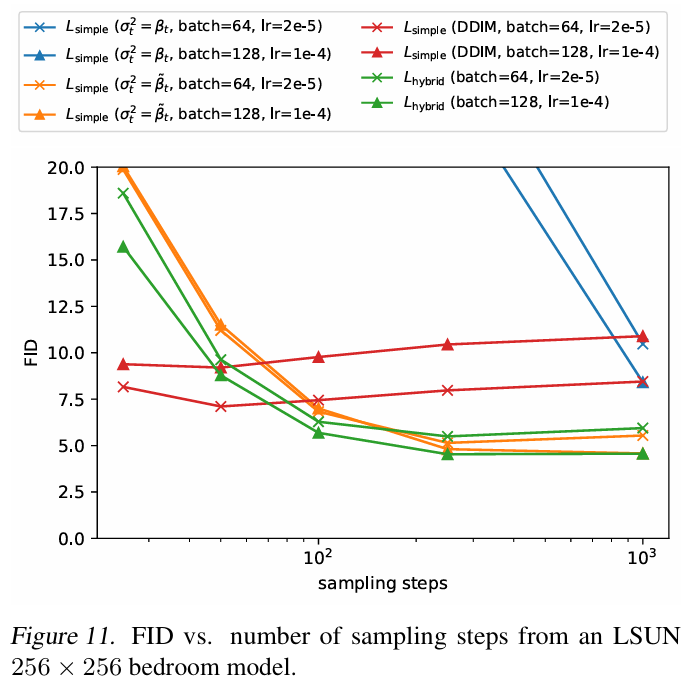 |
|---|
| 图11 LSUN 256×256卧室模型的FID与采样步数的关系 |
C. ImageNet 256×256数据集上的样本质量
我们在类条件ImageNet 256×256数据集上训练了两个模型。第一个是常规的扩散模型，直接对256×256的图像进行建模。第二个模型通过将预训练的64×64模型$p(x_{64}|y)$与另一个上采样扩散模型$p(x_{256}|x_{64}, y)$连接起来降低计算量，从而将图像上采样到256×256。对于上采样模型，下采样后的图像$x_{64}$作为额外的条件输入传递给UNet。这与VQ-VAE-2（Razavi等人，2019）类似，VQ-VAE-2在不同的潜在分辨率下使用两个阶段的先验，以便更有效地学习全局和局部特征。线性调度对于256×256的图像效果更好，所以我们在这些结果中使用了线性调度。表5总结了我们的结果。对于VQ-VAE-2，我们使用了（Ravuri和Vinyals，2019）中报告的FID值。扩散模型在基于似然的模型中仍然获得了最佳的FID值，并且与生成对抗网络（GANs）的差距大幅缩小。
| 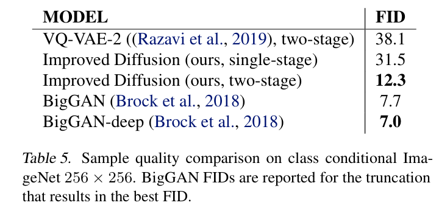 | 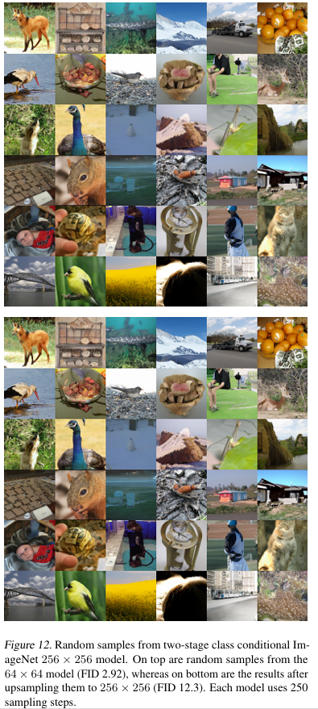 |
|---|---|
| 表5 类条件ImageNet 256×256数据集上的样本质量比较。BigGAN的FID是在能得到最佳FID的截断条件下报告的 | 图12 两阶段类条件ImageNet 256×256模型的随机样本。顶部是64×64模型的随机样本（FID为2.92），底部是将它们上采样到256×256后的结果（FID为12.3）。每个模型都使用250个采样步骤 |
D. 结合$L_{hybrid}$和$L_{vlb}$模型
为了理解$L_{hybrid}$和$L_{vlb}$之间的权衡，我们在图13中展示，由$L_{vlb}$训练得到的模型（记为$\theta_{vlb}$ ）在扩散过程的开始和结束阶段表现更好，而由$L_{hybrid}$训练得到的模型（记为$L_{hybrid}$ ）在扩散过程的中间阶段表现更优。这表明$\theta_{vlb}$更关注难以察觉的细节，因此样本质量较低。
| 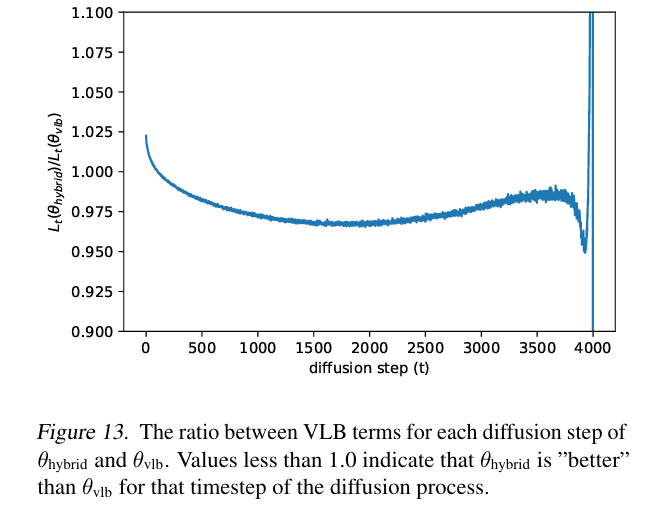 | 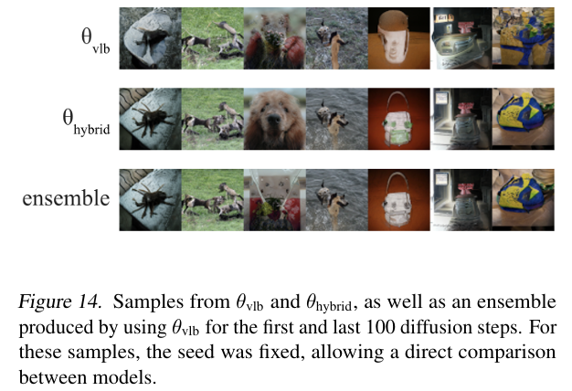 |
|---|---|
| 图13 $\theta_{hybrid}$和$\theta_{vlb}$在每个扩散步骤的变分下界（VLB）项之间的比率。小于1.0的值表明在扩散过程的该时间步中，$L_{hybrid}$比$\theta_{vlb}$ “更好” | 图14 $\theta_{vlb}$、$L_{hybrid}$的样本，以及在前100步和最后100步扩散使用$\theta_{vlb}$构建的集成模型的样本。对于这些样本，种子是固定的，便于直接比较模型 |
基于上述观察，我们在ImageNet 64×64数据集上进行了一项实验，通过构建一个集成模型来结合这两个模型。在这个集成模型中，当$t \in[100, T - 100)$时使用$L_{hybrid}$，其他地方使用$\theta_{vlb}$。我们发现这个模型的FID为19.9，负对数似然（NLL）为3.52比特/维度。在FID方面，它仅比$L_{hybrid}$略差，而在NLL方面则优于这两个单独的模型。
E. 更少扩散步骤下的对数似然
图15绘制了ImageNet 64×64和CIFAR-10数据集上，负对数似然随采样步骤数量变化的曲线。在初始实验中我们发现，虽然恒定步长采样对FID没有显著影响，但却大幅降低了对数似然。为解决这个问题，我们像计算FID时那样，采用步长采样的时间步子集，但同时也纳入从1到$T/K$的每个时间步$t$。这需要额外进行$T/K$次评估步骤，但相较于均匀步长采样的方案，对数似然有显著提升。由于Song等人（2020a）既未给出DDIM下的负对数似然结果，也未提供简单的估计方法，我们没有尝试计算DDIM下的负对数似然。
| 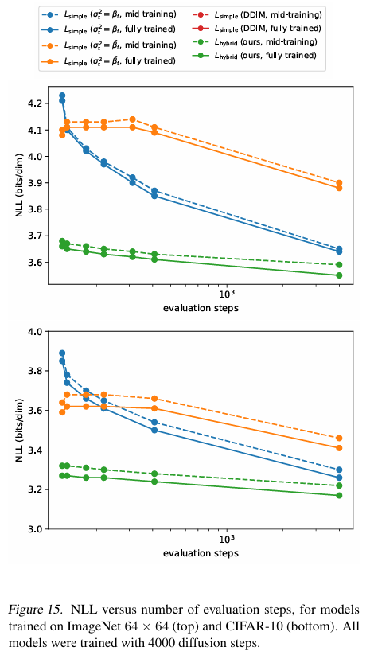 |
|---|
| 图15： ImageNet 64×64（上）和CIFAR-10（下）训练模型的NLL与评估步骤数的关系。所有模型均使用4000个扩散步骤进行训练 |
F. CIFAR-10数据集上的过拟合问题
在CIFAR-10数据集上，我们注意到所有模型都会过拟合，但在训练过程中的某个时刻往往会达到相似的最优FID。在保持dropout率不变的情况下，我们发现使用余弦噪声调度训练的模型比使用线性噪声调度训练的模型更快达到最优性能（然后开始过拟合）（见图16）。在我们的实验中，通过为余弦噪声调度的模型设置比线性噪声调度的模型更大的dropout率来纠正这种差异。我们怀疑余弦噪声调度导致的过拟合，可能是由于：1）余弦噪声调度中的噪声较少，提供的正则化作用较弱；2）余弦噪声调度使优化过程（进而导致过拟合）变得更容易。
| 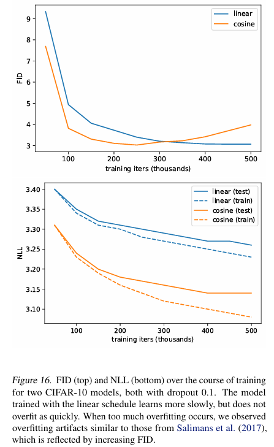 |
|---|
| 图16 两个CIFAR-10模型训练过程中的FID（上）和NLL（下）变化，二者的dropout均设为0.1。使用线性噪声调度训练的模型学习速度较慢，但过拟合的速度也较慢。当出现过度过拟合时，我们观察到类似Salimans等人（2017）中出现的过拟合伪影，这反映在FID的增加上 |
G. 基于FID的提前停止训练策略
与在CIFAR-10数据集上的情况类似，我们惊讶地发现，尽管类条件ImageNet 64×64数据集规模更大、多样性更强，但模型仍存在过拟合现象。这种过拟合的主要表现是，在训练过程中FID开始变差。起初，我们尝试对指数移动平均（EMA）超参数进行扫描（见图17），以确保其得到了良好的调优，结果发现0.9999和0.99995这两个值效果最佳。随后，我们尝试了dropout值为0.1和0.3的情况，发现dropout值较小的模型虽然能提高可达到的最佳FID，但达到相同性能所需的训练时间更长，并且最终仍会过拟合。我们得出结论，就目前所知，最佳的训练方式是提前停止训练；如果希望利用更多的训练计算资源，可以选择增大模型规模。
| 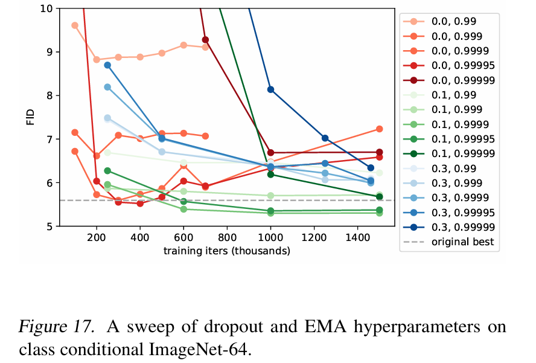 |
|---|
| 图17 对类条件ImageNet-64数据集上的dropout和EMA超参数进行扫描 |
H. 不同采样步数和目标函数下的样本
图18至图23展示了在ImageNet 64×64无条件生成任务中，随着采样步数减少，使用4000个扩散步骤且训练了150万次迭代的$L_{hybrid}$模型生成的样本情况。
图24至图29展示了在CIFAR-10无条件生成任务中，随着采样步数减少，使用4000个扩散步骤且训练了50万次迭代的$L_{hybrid}$模型生成的样本情况。
图30和图31突出展示了使用$L_{hybrid}$和$L_{vlb}$目标函数训练的模型在样本质量上的差异。
| 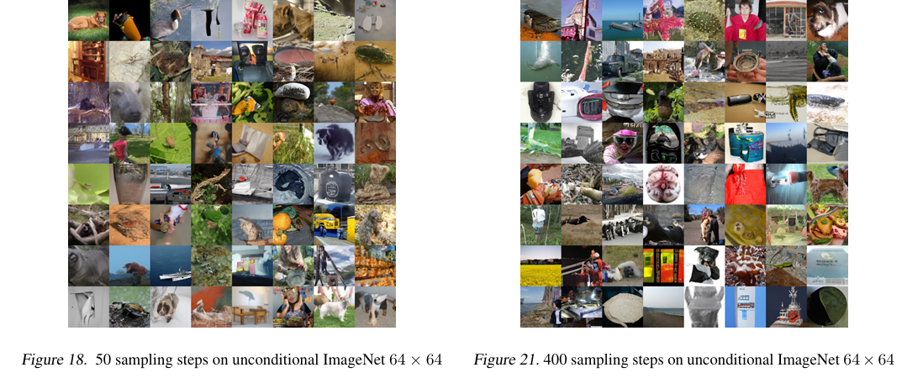 |
|---|
| 图18 ImageNet 64×64无条件生成，50步采样；图21 ImageNet 64×64无条件生成，400步采样 |
| 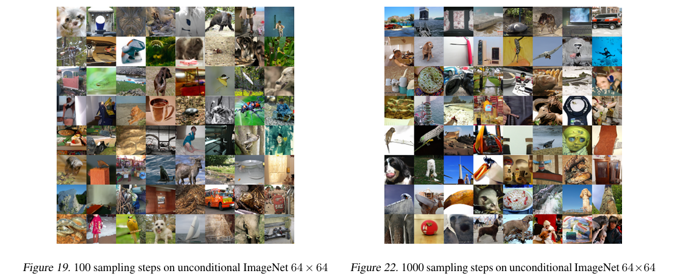 |
|---|
| 图19 ImageNet 64×64无条件生成，100步采样；图22 ImageNet 64×64无条件生成，1000步采样 |
| 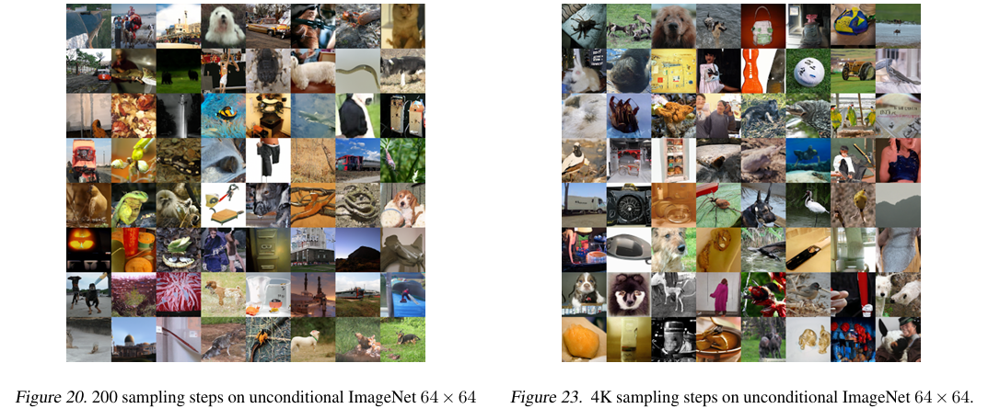 |
|---|
| 图20 ImageNet 64×64无条件生成，200步采样；图23 ImageNet 64×64无条件生成，4000步采样 |
| 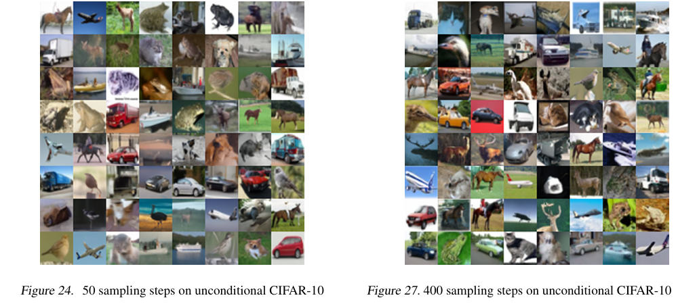 |
|---|
| 图24 CIFAR-10无条件生成，50步采样；图27 CIFAR-10无条件生成，400步采样 |
| 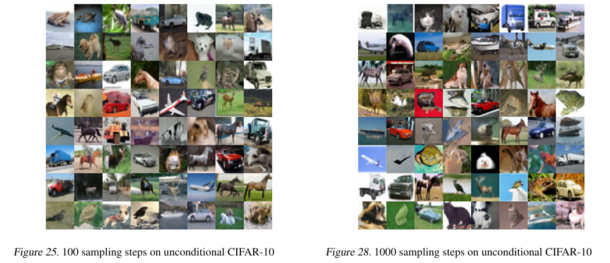 |
|---|
| 图25 CIFAR-10无条件生成，100步采样；图28 CIFAR-10无条件生成，1000步采样 |
| 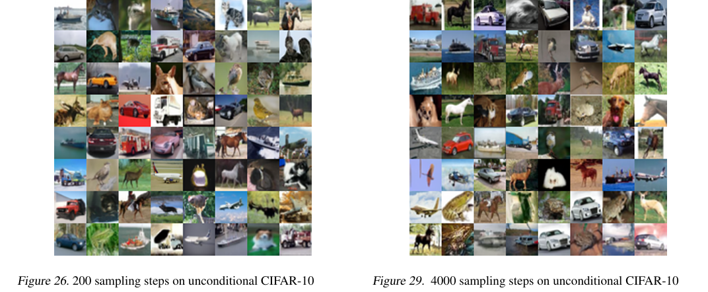 |
|---|
| 图26 CIFAR-10无条件生成，200步采样；图29 CIFAR-10无条件生成，4000步采样 |
| 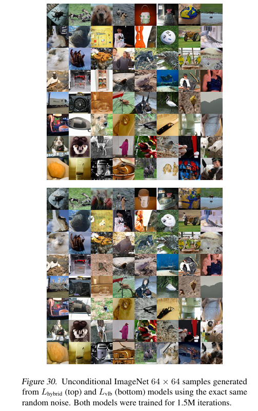 | 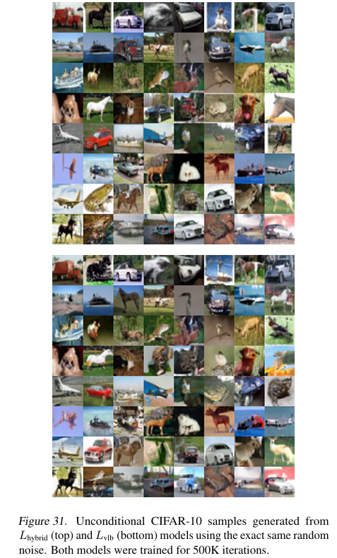 |
|---|---|
| 图30 使用完全相同的随机噪声，由$L_{hybrid}$（上）和$L_{vlb}$（下）模型生成的ImageNet 64×64无条件样本。两个模型均训练了150万次迭代 | 图31 使用完全相同的随机噪声，由$L_{hybrid}$（上）和$L_{vlb}$（下）模型生成的CIFAR-10无条件样本。两个模型均训练了50万次迭代 |
文章总结
这篇论文发表于2021 ICML，主要是对原始的DDPM进行的改进，通过改进参数化方差、修改噪声策略、减小梯度噪声、加速采样等，获得更好的对数似然，提升采样速度。
创新点与主要思想
- 将DDPM中选择固定值的方差改为一个可学习的方差
- 一种新的余弦加噪策略，使$\overline{\alpha}_t$在过程中间呈线性下降，同时在$t=0$和$t=T$的极端情况下变化很小。
- 选择重要性采样策略而非均匀采样，通过优化$L_{vlb}$实现最佳的对数似然。
- 提出一种新的加速采样策略，提高样本的生成速度。
学习$\sum_{\theta}(x_{t}, t)$
DDPM直接将反向过程的方差$\sigma^2_t$固定为$\beta_t$或$\tilde{\beta}_t$，并且发现这两种选项对生成的样本质量影响不大，这是因为除了在最初时刻和差异比较大之外，大部分时刻两者差异是非常小的，尤其是随着扩散步数的增加，这两者几乎是相等的，如图1所示:
| 图1. 不同长度扩散过程中每个扩散步骤的$\tilde{\beta}_{t}/\beta_{t}$比值 | 图2. 变分下界（VLB）的各项与扩散步骤的关系。前几项对负对数似然（NLL）的贡献最大。 |
虽然方差的选择对最终生成的样本的质量影响很小，但是对对数似然值会有影响。如图2所示：扩散的前几步对变分下界（这里其实是负对数似然函数的上界）的影响比较大，因此选用合适的方差可以更好的提升对数似然值。
图1说明$\sum_{\theta}(x_{t}, t)$的合理取值范围非常小，即使在对数域中，神经网络也很难直接预测$\sum_{\theta}(x_{t}, t)$。相反，我们发现在对数域中将方差参数化为$\beta_{t}$和之间的插值会更好。具体来说，我们的模型输出一个向量$v$，每个维度都有一个分量，我们将这个输出转换为方差，如下所示：
这里的$v$就是我们要学习的量。原文中没有对$v$施加任何约束，理论上允许模型预测超出插值范围的方差。然而，在实践中网络并未这样做，这表明$\sum_{\theta}(x_{t}, t)$的取值范围确实具有足够的表达能力。
由于$L_{simple}$不依赖于$\sum_{\theta}(x_{t}, t)$，我们定义一个新的混合目标：
实验中将$\lambda$设置为0.001，以防止$L_{vlb}$主导$L_{simple}$。同时对$L_{vlb}$项中的$\mu_{\theta}(x_{t}, t)$输出应用了停止梯度操作。这样，$L_{vlb}$可以指导$\sum_{\theta}(x_{t}, t)$的学习，而$L_{simple}$仍然是影响$\mu_{\theta}(x_{t}, t)$的主要因素。
余弦噪声
如图3所示，DDPM添加噪声的方法是随时间变化线性增长的，但我们会发现这样在扩散过程的最后的时间段噪声程度已经很大，这一段对提高样本质量没有什么帮助。图4研究了这种影响的结果，我们可以看到，使用线性调度训练的模型在跳过高达20%的反向扩散过程时，（根据FID衡量）并没有变得更差。因此IDDPM提出一种非线性的cosine方法，核心思想就是让$\overline{\alpha}_t$在接近$t=0$以及$t=T$处变化较小，如图5所示。
| 图3. 分别从线性（上）和余弦（下）调度在从0到T的线性间隔t值处的潜在样本。线性调度最后四分之一的潜在样本几乎全是噪声，而余弦调度添加噪声的速度更慢。 |
| 图4. 在ImageNet 64×64上跳过反向扩散过程的前缀时的FID。 | 图5. 线性调度和我们提出的余弦调度在整个扩散过程中的$\bar{\alpha}_{t}$ |
为了解决这个问题，我们根据$\bar{\alpha}_{t}$构建了一种不同的噪声调度：
为了从这个定义得到方差$\beta_{t}$，我们注意到$\beta_{t} = 1 - \frac{\bar{\alpha}_{t}}{\bar{\alpha}_{t - 1}}$。在实践中，我们将$\beta_{t}$裁剪为不大于0.999，以防止在扩散过程接近$t = T$时出现奇点。
我们的余弦调度旨在使$\bar{\alpha}_{t}$在过程中间呈线性下降，同时在$t = 0$和$t = T$的极端情况下变化很小，以防止噪声水平突然变化。
我们使用一个小的偏移量$s$来防止$\beta_{t}$在$t = 0$附近过小，因为我们发现，在过程开始时存在少量噪声会使网络难以准确预测$\epsilon$。具体来说，我们选择$s$使得$\sqrt{\beta_{0}}$略小于像素量化区间大小1/127.5，由此得到$s = 0.008$。我们特别选择使用$\cos^{2}$函数，是因为它是一种常见的数学函数，具有我们所需的形状。这个选择具有一定的任意性，我们预计许多其他形状相似的函数也会有类似的效果。
直接优化$L_{vlb}$
IDDPM更希望直接优化$L_{vlb}$而不是优化$L_{hybrid}$，但是实际上它非常难以优化，图6是分别只优化$L_{vlb}$和优化$L_{hybrid}$得到的损失函数曲线：
| 图6. 在ImageNet 64×64上比较不同目标函数实现的对数似然的学习曲线 | 图7. 在ImageNet 64×64上$L_{vlb}$和$L_{hybrid}$目标函数的梯度噪声尺度 |
可以看到，两条曲线都非常不光滑，但是优化$L_{hybrid}$显然可以获得更小的损失。我们考虑到这可能是由于训练时时间均匀采样的结果。如果我们采用下面的方法对进行重要性采样：
们得到的曲线就如上图绿色曲线一样，可以更好的优化对数似然，也减小了梯度噪声。重要性采样直观来说就是，在$L_t$大的地方多采一些点，在$L_t$小的地方少采一些点。但是重要性采样的方法仅对优化$L_{vlb}$起作用，对于优化$L_{hybrid}$没有作用。
加速采样
本文发现预训练的$L_{hybrid}$模型能够在比训练时少得多的扩散步数下生成高质量样本：对于一个经过$T$步扩散训练的模型，可以使用$t$值的任意子序列$S$进行采样。给定训练噪声调度$\bar{\alpha}_{t}$ ，对于给定的序列$S$，我们可以得到采样噪声调度$\bar{\alpha}_{S_{t}}$ ，进而得到相应的采样方差：
由于$\sum_{\theta}(x_{S_{t}}, S_{t})$被参数化为$\beta_{S_{t}}$和$\tilde{\beta}_{S_{t}}$之间的一个范围，它会自动针对更短的扩散过程进行重新缩放。因此，我们可以将$p(x_{S_{t - 1}} | x_{S_{t}})$计算为$\mathcal{N}(\mu_{\theta}(x_{S_{t}}, S_{t}), \sum_{\theta}(x_{S_{t}}, S_{t}))$ 。
为了将采样步数从$T$减少到$K$，我们在$1$到$T$（包含两端）之间取$K$个均匀分布的实数，然后将每个结果四舍五入到最接近的整数。在图8中，我们评估了一个$L_{hybrid}$模型和一个$L_{simple}$模型的FID，这两个模型都经过4000步扩散训练，使用25、50、100、200、400、1000和4000步采样。我们对完全训练好的模型和训练过程中的中间模型进行了这样的评估。对于CIFAR-10，我们使用20万次和50万次训练迭代，对于ImageNet 64，我们使用50万次和150万次训练迭代。我们发现，固定标准差的$L_{simple}$模型（无论是较大的$\sigma_{t}^{2} = \beta_{t}$还是较小的$\sigma_{t}^{2} = \tilde{\beta}_{t}$ ）在减少采样步数时，样本质量下降得更明显，而我们学习标准差的$L_{hybrid}$模型则能保持较高的样本质量。对于这个模型，100步采样就足以使完全训练好的模型达到接近最优的FID。
| 图8. 在ImageNet 64×64（上）和CIFAR-10（下）上训练的模型的FID与采样步数的关系。所有模型都经过4000步扩散训练。 |
损失函数与模型训练
本文定义的新的混合损失函数训练目标如下：
其中：
但是本文在实验中发现采用均匀采样的方式优化$L_{vlb}$的效果并不好，采用重要性采样效果好一点，公式如下：
不足之处
- 对数似然优化的复杂性：直接优化变分下界（VLB）来提升对数似然在实践中颇具挑战，其梯度噪声较大。论文虽提出了混合目标函数（$L_{hybrid}$）和重要性采样等方法来改善，但这也表明直接优化对数似然的过程并不简单，需要复杂的技巧来处理梯度噪声问题。例如，在实验中发现直接优化$L_{vlb}$的学习曲线波动较大，且难以收敛到较好的结果。
- 采样速度提升的局限性：虽然改进后的模型能够减少采样步数并保持较高的样本质量，但与其他一些快速采样方法（如DDIM）相比，在采样步数极少（少于50步）的情况下，生成样本质量仍存在差距。并且，减少采样步数可能会导致对数似然降低，这意味着在提升采样速度的同时，难以兼顾对数似然和样本质量，存在一定的局限性。
- 模型性能与计算资源的权衡：在扩大模型规模和增加训练计算量时，尽管模型的样本质量和对数似然有所提升，但验证集的负对数似然（NLL）提升效果不如FID明显。这可能是由于模型存在不可忽视的不可约损失，或者模型在训练过程中出现过拟合现象，导致无法充分利用增加的计算资源来优化对数似然。
- 过拟合问题：在CIFAR - 10和类条件ImageNet 64×64数据集上都观察到了过拟合现象。例如，CIFAR - 10上所有模型都会过拟合，尽管在训练过程中能达到相似的最优FID，但过拟合会导致FID变差；在ImageNet 64×64上，即使该数据集规模较大且多样性高，模型仍会出现过拟合，影响模型性能 。
- 噪声调度和模型设计的特定性：改进的噪声调度（如余弦调度）是针对特定分辨率（64×64和32×32）图像设计的，对于其他分辨率图像的适用性可能需要进一步研究。此外，模型架构和训练设置（如UNet模型架构、注意力层设置、超参数选择等）是经过特定实验和调整得到的，可能并非适用于所有情况，缺乏更广泛的通用性。